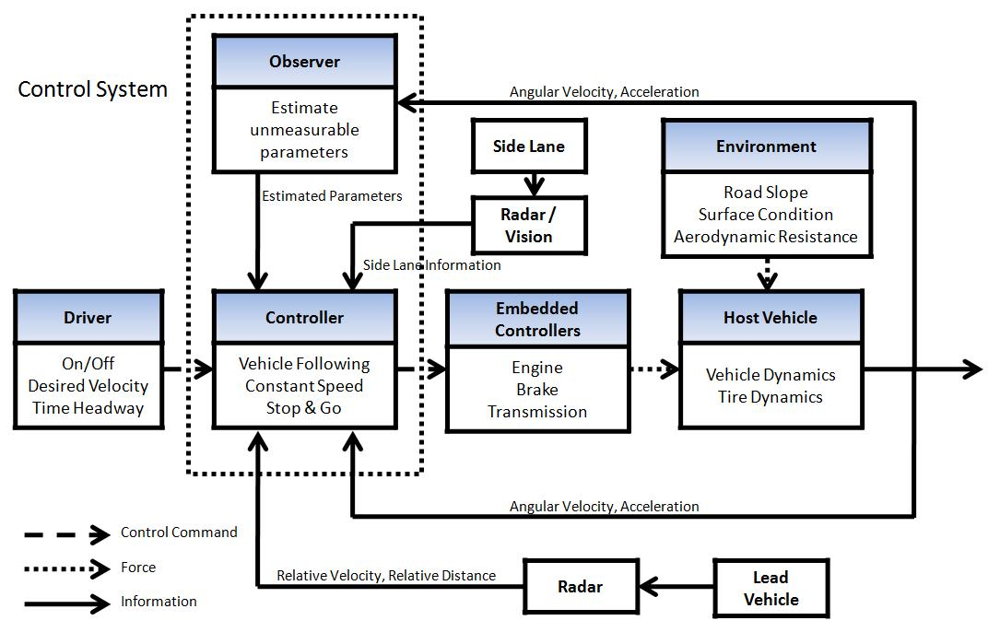
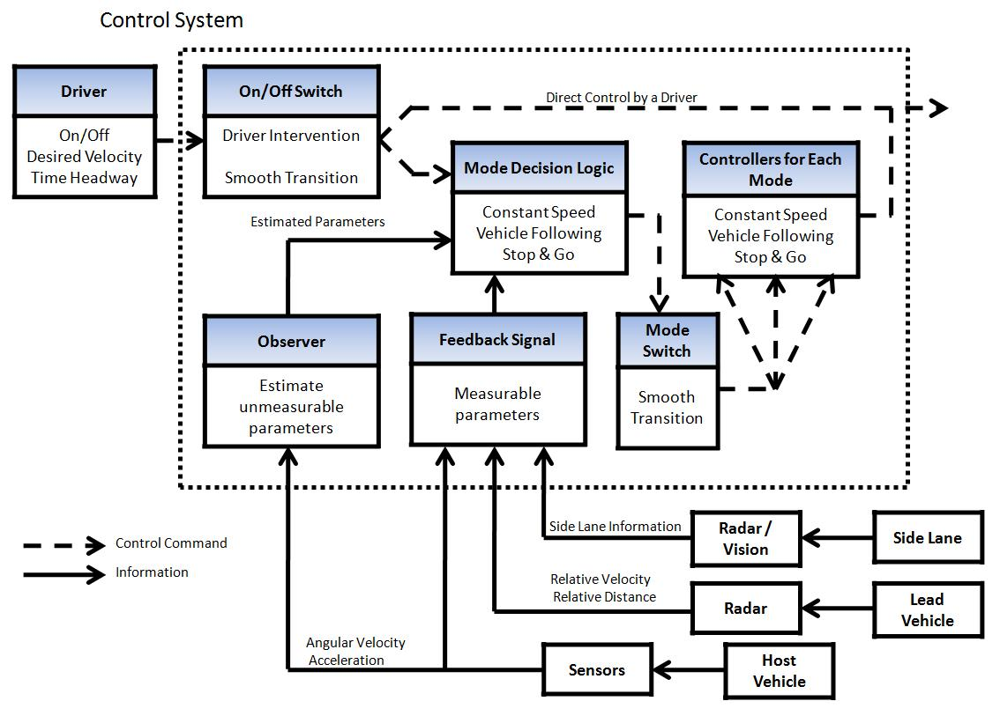

Current Projects
Past Projects
Advanced Vehicle Control Systems
Copier Paperpath Control
Disk Drive Control
Intelligent Machining
ILP Summary '96-'97
 Advanced Vehicle Control Systems
Advanced Vehicle Control Systems
-->Adaptive Cruise Control Systems with Stop-and-Go
-->Turbocharged Spark-Ignition Engine Control
Adaptive Cruise Control Systems with Stop-and-Go
Introduction
| Research Topics
| Researchers
| Acknowledgement

Modern automobiles are equipped with a number of drive assistance functions for safety and reduction in driver fatigue. Cruise control is such a function. It was originally introduced as a function to maintain the speed of an automobile at a reference value selected by the driver. In recent years, it has evolved to adaptive cruise control (ACC) or intelligent cruise control, which has an additional function of car following when the preceding vehicle is driven at a speed lower than the reference speed. ACC has become reality because of advances in sensor technologies and other enabling technologies. Research and development efforts are continuing in both the academic and industrial sectors to further enhance the capability of ACC.
One importance enhancement is the car following capability at low speeds including stop-and-go capability. In case of heavy traffic, the driver has to keep driving over hours and cannot use the cruise control function. With a stop-and-go capability, the driver`s fatigue can be immensely reduced. Also, with a further advance, this function can be expended to be used in a city driving.

Fig. 1: Overall System Flow Diagram

Fig. 2: Detail Control Flow Diagram
Environmental parameter estimation
With a good estimation of the environmental parameters, a smoother and safer control of the vehicle can be achieved. For a smooth driving, an appropriate cancellation of disturbances is required. At low speeds, the gravitational disturbance due to the road slope is a dominant resistance, while at high speeds the effect of the aerodynamic disturbance is the most important. Also, the information of the environmental parameters like the road friction coefficient can be utilized for a safe control of the vehicle.
Controller tuning
Many methods can be used for the tuning of the feedback controllers. One of the promising methods is Iterative Feedback Tuning which can autonomously tune the gains of the controller. By adding the quadratic function of the acceleration, passengers' comfort can be additionally considered in the design of the controller.
Switching
Since the ACC controller consists of different modes, and the vehicle itself uses two different power sources - an engine and a brake, it is important to guarantee soft and stable transients between different modes. For example, the controller has to work safely in case of a sudden lane change - cut-in or cut-out- of a lead vehicle.
Smooth stop
Due to the compliance of tires, a hard braking can cause an undesirable oscillation of the vehicle during a complete stop. This undesirable motion can be captured with some tire models including Dynamic Deflection Tire model. The controller should minimize the oscillation to enhance the comfort of passengers.

Researchers
Kim, Sanggyum | Homepage | Email

Acknowledgement
This project is a collaboration between University of California, Berkeley and Industrial Technology Research Institute in Taiwan.